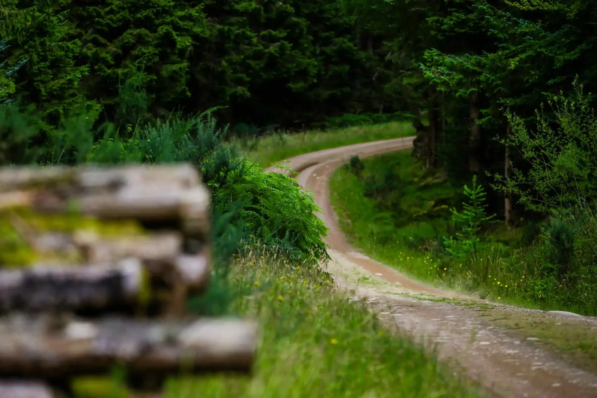
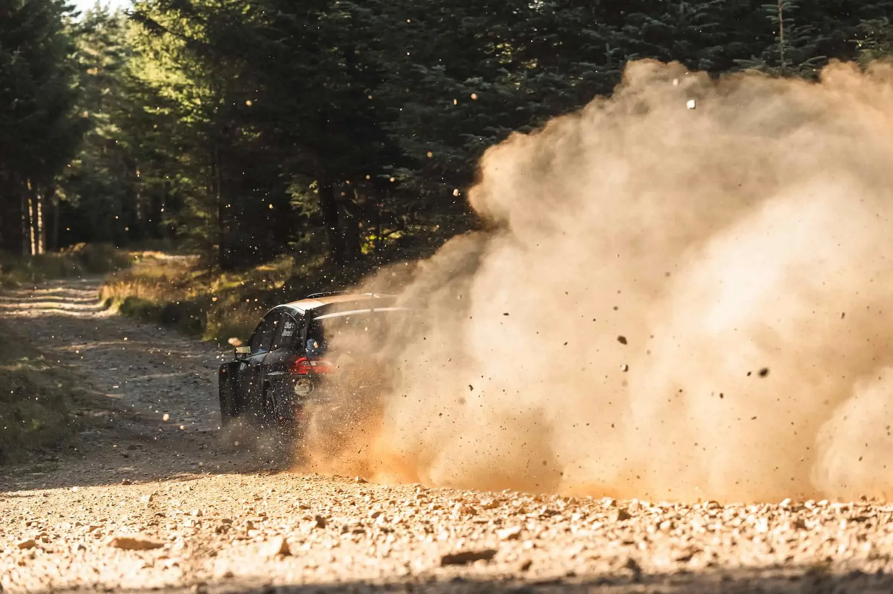
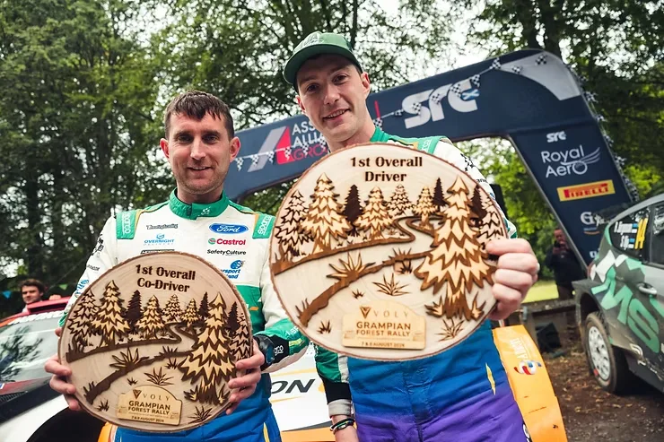
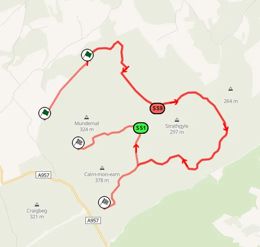
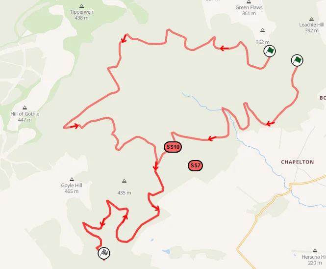

WRC Is Coming to Scotland in 2027: Here’s What to Expect
The World Rally Championship will return to Great Britain in October 2027, marking the series' first visit to the country since 2019. Based in Aberdeen, the event will also mark the championship’s first appearance in Scotland since 1995, when a couple of stages of the RAC Rally were held in the south of the region. So what can we expect from the event? What are the stages going to look like? How close to Wales Rally GB will this event be? Let's dive in, shall we?
No, it won't be like Wales Rally GB
Rally Scotland will be its own thing, so people expecting a Wales copy, might feel a bit underwhelmed. While Scotland’s forests may resemble scenery previously seen in Wales, the roads will look and feel completely different.
For starters, based on the stages used in the Grampian Forest Rally, which is where the upcoming rally will be based on, it looks as if Rally Scotland will be quite rougher compared to Wales. The forest roads to the southwest of Aberdeen are looser and rockier, meaning the grip, as well as the cleaning and the road's profile will be different to previous editions of the Rally of Great Britain. The roads in the area tend to rut-up and become rougher on the second pass, as seen in previous editions of the Grampian Forest Rally. Dust will also be a factor, as with the looser topsoil, there can be hanging dust in the dense forest sections on dry conditions.
Though, it should be mentioned that since the rally will be held in October, not in the summer like the candidate event, there's a higher chance of rain, that will get rid of the loose factor and dust.

What is the profile of the rally?
Based on onboards from the Grampian Forest Rally, the stages appear to be more angular compared to Wales, and also appear to have less camber. Αt the same time, Scotland's stages are quicker than the ones in Wales. If we compare the average speed of the winner in this year's Grampian Forest Rally, versus the ones in the Severn Valley Stages and the Grampian Rally, that contain stages previously used in the Rally of Great Britain, the Aberdeen stages are the fastest of the three, with Jon Armstrong having an average speed of 104.8 km/h in the Fiesta Rally2 this year.
That number will more than likely be higher for the 2027 edition, as the Rally1 cars will be faster than the Rally2s that competed in the candidate event this year, plus, the competition will be higher.

If I was to sum up the rally's characteristics, I would say this is a high-speed event that will be loose if dry, while being flowing for the most part. I would make an educated guess and say Scotland would be the third fastest gravel rally in next year's calendar, behind Finland and Estonia, but ahead of Chile and Paraguay.
People who know events like the Grampian Forest Rally will know the sort of roads I’m talking about – good, hard, dry, classic Scottish forestry roads. Beyond that, they’ll have to wait and see. The aim is to create something that feels distinct in the world championship.
What stages can we expect to see in the rally?
Obviously, most of the stages in the rally will bare resemblance to the ones in the Grampian Forest Rally. But this year's candidate event was only 91km long, and on some occasions repeated sections inside other tests, like on SS7 and SS10 as well as SS1 and SS9.


The rally organisers will have to find close to 100km of unique roads for the 2027 edition of the rally. Those missing kilometers will more than likely come from stages used in the nearby Speyside Stages Rally to the north of Aberdeen. The stages used in the rally are mostly quite straightforward, with the route usually comprised of straights and fast corners, joined together by junctions. The Knock More/Ben Aigan stage is however more technical and flowing.
In an interview on the Rally Scotland website, Andy Jardine, Rally Scotland’s Sporting Coordinator, detailed what the rally's route could look like in October 2027.
The route is still coming together, but most of the stages will likely sit within 30 kilometres to the south [of the Service Park], 50 kilometres to the north and maybe 30 kilometres to the west. We know the places we want to visit. Now it’s about making sure everything fits and works for everyone involved.
The stages "30 kilometers to the West" could be referring to stages used in the Granite Rally back in the day. Part of the Grampian Forest Rally uses the southernmost stages of the now defunct event. That doesn't mean there couldn't be any new stages in 2027. In the same interview, Jardine mentioned the following:
There are some strong established stages around here, but I’ve also spent a lot of time exploring roads that other rallies don’t currently use. In a few cases you find out why they’re not used. In others, you find opportunities that could work very well for us. It’s been a really useful process.
That means we could witness roads not used before in Scotland's WRC debut.
Concept Itinerary
When the rumours about a rally in Aberdeen first appeared, I made a concept itinerary of what the event could look like. Based on what the organisers have hinted at, my route doesn't appear to be too far off what we might see in 2027.
My fantasy route started with a night stage on Thursday in the Kirkhill Forest, on the outskirts of Aberdeen. Then on Friday, the crews would head north, tackling four repeated stages. The first three tests are used in the Speyside Stages Rally, and Whitehaugh combines the routes of the Clatterin Kist and Whitehaugh stages that were used in Grampian this year.
Saturday moves to the south and west of Aberdeen. Raemoir House is something I made based on a road I found, whereas Blackhall was last used in 1992, as part of the Perth Scottish Rally. Westerton is again something I found, with Finglenny being a staple of the Grampian Rally. Sunday features two repeated stages. Fetteresso is a selection of what I considered the best roads in the area, combining the routes of different stages in the area. Duriss Hill is mostly the same as SS1 of this year's Grampian Rally. You can check the full itinerary + the map of my rally below:
| Thursday | ||
|---|---|---|
| SS1 | Kirkhill Forest | 6.77km |
| Friday | ||
| SS2/6 | Balloch | 13.84km |
| SS3/7 | Ben Aigan | 11.73km |
| SS4/8 | Clashindarroch | 17.96km |
| SS5/9 | Whitehaugh | 16.29km |
| Saturday | ||
| SS10/14 | Raemoir House | 18.38km |
| SS11/15 | Blackhall | 14.03km |
| SS12/16 | Westerton | 11.70km |
| SS13/17 | Finglenny | 13.78km |
| Sunday | ||
| SS18/20 | Fetteresso | 31.99km |
| SS19/21 | Duriss Hill | 14.19km |
| Event Totals 334.55km | ||
Full event map: https://www.mapfab.com/map/Aj7y/Aberdeen-Rally-Concept
I should note, this itinerary doesn't include any potential SSSs like park stages that the organisers in GB love, or a street stage in Aberdeen. Also, this was made before the new promoter took over, so a slightly shorter version of Fetteresso would probably be just fine as Sunday's entire run.
Closing thoughts
I think Rally Scotland will be a fine addition to the WRC calendar. It will be a unique event, not resembling any currently on the schedule, and it will bring a passionate fanbase, as well as an important market back to the sport.


Comments